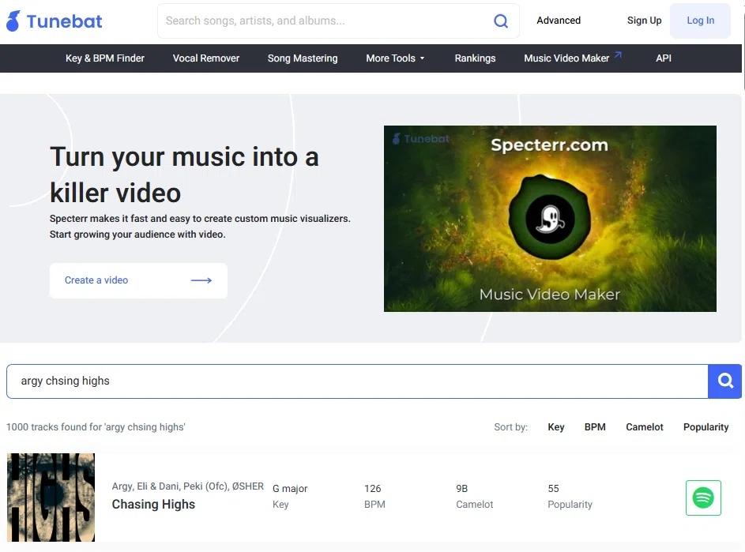
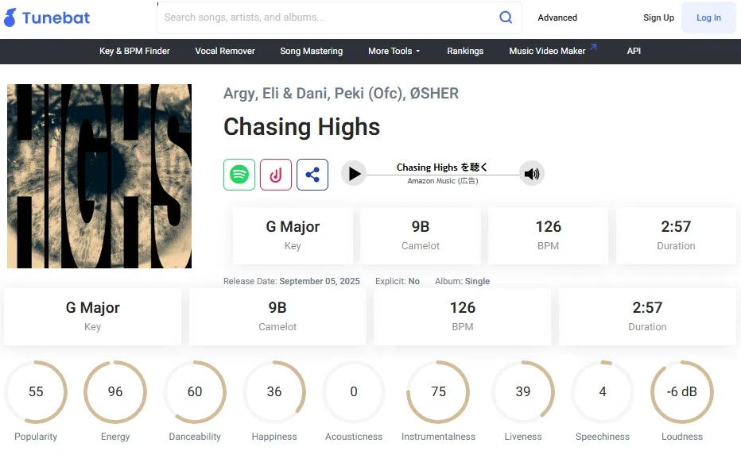

「どうすれば、1曲を最後まで
完成させられるのか？」
DTMを始めた人が、最初に頭を抱える“避けられない問い”がある。
これは、ほぼ全員が抱える“究極の議題”です。
私も同じでした。
DTMを始めた当初、あの頃の私は、作っては挫折し、最初の8小節だけ積み上がっていく未完成の山を抱えていた。
メロディも、構成も、ミックスも、どれも途中で迷って止まる。
- 「なぜ、プロのように迷わず作れないんだろう？」
- 「センスがないのか？」
- 「そもそも何から作ればいいのか？」
だが、アルバムを制作し、毎月曲を完成させるようになった今なら、あの頃抱えていた疑問に、たった一言で答えられる。
私はある時、世界のプロの制作フローを徹底的に並べた。 メロディックテクノに限らず、ハウス、ダブステップ、ドラムンベース ── ジャンルを越えて“完成している人の共通点”を洗い出した。
そして、気づいた。
完成する人と、未完成で止まる人の差は、“最初の1歩の踏み出し方”にある。
あなたが今まで曲を完成できなかった本当の原因は、“作り込み”ではなく、“入り方”にある。
「1曲も完成しない」
その原因は、作り込みじゃない。
It's Not About How You Build ── It's About How You Start
多くのDTMerは、こう思い込む。
- もっと音作りを学べばいい
- もっとプラグインを揃えればいい
- もっとセンスが必要だ
だが ── 違う。
完成する人と、未完成で止まる人の差は、“作り込み”ではなく“入り方”にある。
世界のプロが共通して踏んでいる“最初の1歩”がある。それが ── レファレンス（reference）だ。
レファレンスとは、単なる「好きな曲」ではない。
制作の基準になる、“指針（コンパス）”。
この STEP でやってほしいこと
Three Things To Do
STEP1-1でやることは、3つだけ。
楽曲の“解剖図”を知る
曲が何でできているか、5つの要素で押さえる。
たった1曲を選ぶ
“完璧な1曲”ではない。感情が一番動く曲を選ぶ。
BPM・Keyを写し、構成を書き出す
Tunebatを使い、小節単位でメモする。
これだけで、“なんとなく作る”状態から卒業できる。
難しい音作りやアレンジは、まだ不要。ここで方向性が固まれば、この先の制作は一気に楽になる。
この3手順を終えれば、続編 STEP1-2「丸裸にする」へ進める。
楽曲の“解剖図”を知る
Know The Anatomy ── The Five Elements
曲は、魔法のように生まれるものじゃない
世界中のプロも、必ず“5つの要素”を踏まえて作っている。
まずは、その解剖図を頭に入れる ── これが、すべての始まりだ。
楽曲を構成する、5つの要素
この5要素を意識して聴くだけで、レファレンス選びが変わる。
“なんとなくいい曲”ではなく、“5要素で語れる曲”が選べるようになる。
まず、たった1曲だけ選ぶ
Choose The One ── The Compass For The Whole Trip
「こんな曲を自分も作りたい」と心から思える曲を、たった1曲だけ選ぶ
最初にやるべきことは、難しい音楽理論でも、高度なサウンドデザインでもない。
もし今、頭の中に理想の1曲が思い浮かばないなら、あなたの中で一番再生回数が多い曲、気づいたら何度も聴いている曲を選んでください。
ここで大事なのは、「完璧な1曲」を選ぶことではない。あなたの感情が一番動く曲を選ぶこと。
「この1曲みたいな世界観の曲を、自分も1曲作れるようになりたい」
この“旗”を立てる ── それが、STEP1-1で本当にやるべき行動です。
選び方を間違えなければ、迷子にならない
NG ── The Wrong Way
最初から全部を決めようとする
- どんな雰囲気の曲にしたいのか
- どのフェスの、どの時間帯で流れるイメージなのか
- 踊らせたいのか、泣かせたいのか、飛ばせたいのか
- BPMはいくつにするのか
- どのアーティストの系統に寄せるのか
OK ── The Right Way
“感情が一番動く1曲”を選ぶ
- 一番再生回数が多い曲でいい
- 気づいたら何度も聴いている曲でいい
- “完璧な1曲”を探さなくていい
正直に言う。最初からこれを全部言語化できる人なんて、ほぼいない。 もしここまで明確に決まっているなら、その人はすでに曲を量産している。
だから、いきなり全部決めようとしなくていい。その代わりに、こう決めてくれ。
A REAL STORY ── なぜ私は Argy を選んだのか
私が「Prayer」を制作する際、最初のアイデアは“民族風のボーカルを使ったArgyのような楽曲を作ってみたい”というところから始まった。
Argyが選ばれた理由は、まず自分がよく聞くアーティストであったこと。 そして ULTRA JAPAN で実際にプレイしている姿を見て、彼のような楽曲を作ってみたいと思ったこと。
25年末に予定していた年末のアジア最大級のダンスミュージックフェス「Sunburn Festival India」の日程が例年から変わり、行けなくなってしまった悔しさです。
3日間で30万人が来場するともいわれるこのフェスに行き、インドを回ることで自分の人生への刺激をより高めようと夏ごろから計画を立てていた。 だが9月10月あたりに、例年 12/28-30 あたりの開催予定日と異なり、今年は 12/19-21 に変更というアナウンスがあった。
毎年年末年始を海外フェスとともに過ごすというスタイルをとっていた私たちだったが、日程的に行くことができないと、泣く泣くあきらめてしまった思い出がある。
India 2025 3日間で30万人が集まる、アジア最大級のダンスミュージックフェス。
例年12/28-30開催 → 2025年は 12/19-21 へ変更。 sunburn.in
このアルバムでは、そんな悔しい思い出を曲として昇華させるために、民族系、特にインド感のある一曲を作ると心に決めた。 そして、民族系ボーカルの使い方が非常にうまいと思っていた Argy をレファレンスに選んだ。
特に、シンプルなボーカルと飽きさせないグルーヴ感のある楽曲 ── Argy - Chasing Highs をレファレンスにすると心に決めた。
My Reference ── 実際に聴いてみる Argy, Eli & Dani, Peki (Ofc) & ØSHER「Chasing Highs」 2025年／2:57 126 BPM ／ G Major music.apple.com
レファレンスは、論理ではなく“感情の核”から選ぶ。
これさえ守れば、どんなジャンルでも迷子にならない。
BPM・Keyを写し、
構成を書き出す
Copy The Numbers ── And The Structure
この1曲が決まると、以降の判断が一気にラクになる
ここから先、選んだ1曲は「レファレンス」として扱う。 レファレンスとは、単なる「好きな曲」ではなく、制作の基準になる指針です。
- 楽曲の構成 → レファレンスを真似すればいい
- キックの太さ → レファレンスに近づければいい
- ベースの動き → レファレンスを真似すればいい
- ブレイクの長さ → レファレンスの構成を写せばいい
- 全体の音量バランス → レファレンスと聴き比べればいい
つまり、「この1曲を、自分なりに再現・解釈していく旅」として曲作りを捉え直すわけだ。
そのために、まずやるのは ── BPMとKeyを“写す”こと。
“自分に合うBPM”を悩む必要はない。“自分に合うキー”を悩む必要もない。
レファレンスと同じBPM、同じKeyから始める。構成も、小節単位で書き写す ── これだけ。
これで、迷いは半分以下になる。
① BPM / Key ── Tunebatで3ステップ
「BPMやKeyを自分で耳コピするのはきつい…」と思うかもしれないが、安心してくれ。 Tunebat というサイトを使えば、BPMとKeyは一瞬で分かる。
曲名で検索
アーティスト名 + 曲名 で検索する。
DAWにセット
表示されたBPMとKeyを、自分のDAWプロジェクトにそのままセットする。

を置いてください

を置いてください
私の「Prayer」も、ここから 126bpm / G major で始めた。
私自身、曲を聴くだけでBPMとKeyを正確に当てることは不可能だ。
プロでもTunebatを使う ── これが現実です。
② STRUCTURE ── 小節単位でメモする
ここが、レファレンス解析で最も重要なポイントだ。曲を“小節軸”で眺めていく。
私が「Argy - Chasing Highs」で実際に行った構成分解を紹介する。
▲ 各パートをタップすると内容が表示されます。
このように、「どこで何が起きているか」を文章で書き出してみる。 これだけで、あなたの曲の“設計図”がほぼ完成する。 ここで書き出した構成は、そのまま「自分の曲の骨組み」として使ってOKです。
キックとベースの役割、
ブレイクとドロップの“温度差”も意識する
レファレンスを聴きながら、こういうポイントにも耳を向けてくれ。
キックとベースの役割
Low-End- キックの低域はどれくらい強いか
- サブベースは常に鳴っているか？ それとも抜く部分があるか？
- ドロップではベースがどれくらい前に出ているか
- ブレイク中は、キックとベースがどのタイミングで戻ってくるか
ブレイクとドロップの“温度差”
Contrast- ブレイクで“減っている”のは何の音か？
- ドロップで“増えている”のは何の音か？
- どんなFXやライザーを使って、そこに橋をかけているのか？
この「低域の出入り」こそが、ダンスミュージックの体感的なドラマを作っている。 STEP2以降の「ローエンド設計」に直結するので、ざっくりでもいいので意識してメモを取ってくれ。
メロディックテクノやテクノでは、静かなブレイクと爆発するドロップ、 このコントラストが非常に重要です。メモしておくと、後のアレンジ作業で迷いがなくなる。
STEP1-1 の本質
“なんとなく作り始める”のではない。
▼
“指針（コンパス）を持って”作り始める。
ここが、完成する人と止まる人を分ける、最初の分岐点です。
私が「Prayer」を作ったときも同じだった。
- Argy をレファレンスに選び
- Chasing Highs の BPM と Key を合わせ
- 構成を小節単位で書き出した
それだけで、「あとはこの骨格の上に、自分の物語を乗せていくだけだ」と思えた瞬間から、一気に完成までの道筋がクリアになった。
STEP1-1が終われば、もう“手探り”ではない。
STEP 1-1 ── クリア条件
次の4つが揃っていれば、STEP1-1はクリアでいい。
4つすべてクリアです。もう“手探り”ではありません。STEP1-2「レファレンスを丸裸にする」へ進んでください。
ラボ専用LINEで
「1曲が決まりました」の報告を
── ここまで来たあなたへ
ここまで本当にお疲れ様です。STEP1-1まで終えたら、ぜひラボ専用LINEで報告してください。
- このレファレンスで合っているか不安
- 構成の切り方が正しいかわからない
- 自分のジャンル感とズレていないか見てほしい
遠慮なく送ってほしい。必要であれば、構成について具体的にアドバイスいたします。
【STEP1-1課題】レファレンス決定報告 アーティスト名： 曲名： BPM： Key： URL（ストリーミングサイトのリンク または YouTube）： 構成のメモ → できた / サポート依頼
構成のメモが「途中まで」「自信がない」「合っているかわからない」という状態でも問題ない。 むしろ、そのほうが的確なアドバイスができる。
そして何より ──「STEP1-1まで完了しました」の一言だけでも、ぜひ送ってください。
レファレンスを丸裸にする
Strip The Reference
次はいよいよ、STEP1-2 ── Strip The Reference。
STEP1-2 では、選んだ1曲の“内部構造”まで本気で読み解く工程に入る。
MVSep（Web版）
誰でもできる本命ルート。
Ableton Stems
持ってる人はこれ一択。
Side By Side
DAWに4ステムを並べて聴き比べる。
耳だけじゃ届かない領域に、AIで踏み込む ── それが、STEP1-2のミッションです。
- ベースがどこで抜け、ドロップでどう戻るか
- ドロップ前にFXの高域がどれだけ持ち上がっているか
- ブレイクのロー成分をどこまで削っているか
- キックのアタックがどの帯域に集中しているか
選んだ1曲を、本気で“丸裸”にしにいこう。
押すとHUBの進捗％に反映されます。